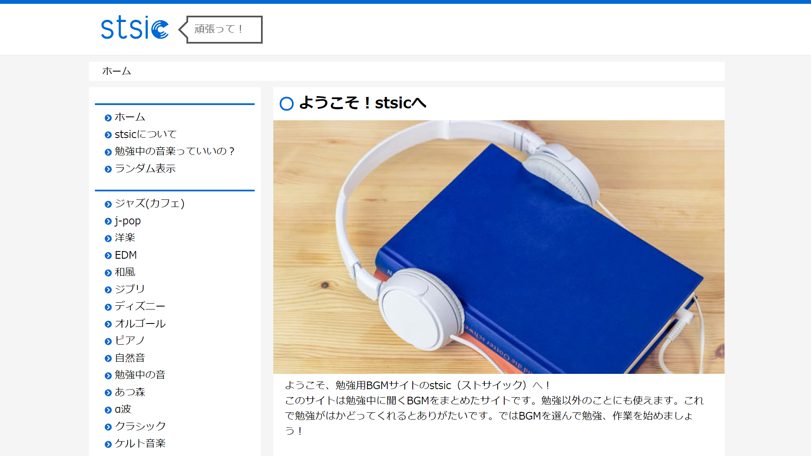
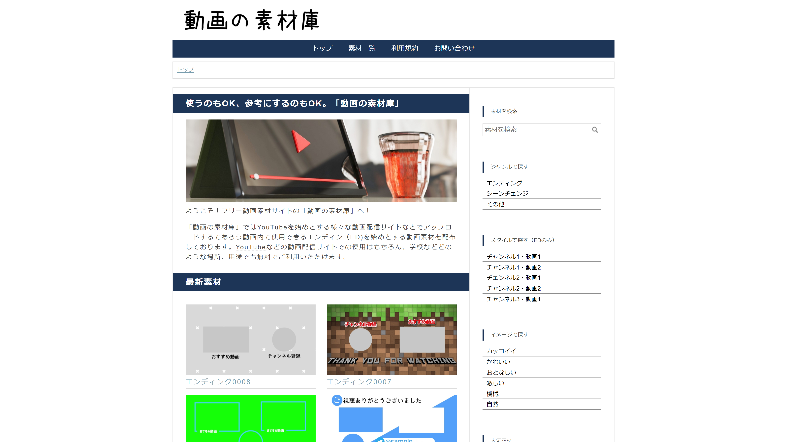

Works
You will see a list of websites and services that PocoPota has created so far.

LiveClock
A service that displays a customized clock on the distribution screen
HTML / CSS / JavaScript
SITE

stsic
A site where you can enjoy BGM that you can use while studying or working
HTML / CSS / JavaScript
SITE
PocoPotaの隠れ家
A blog that customizes the Hatena blog and reviews products
Hatena blog / HTML / CSS / JavaScript
SITE CODE

動画の素材庫
A service and its site that distributes the ED used in YouTube videos as free material
Hatena blog / HTML / CSS / JavaScript / Video editing technology
SITE